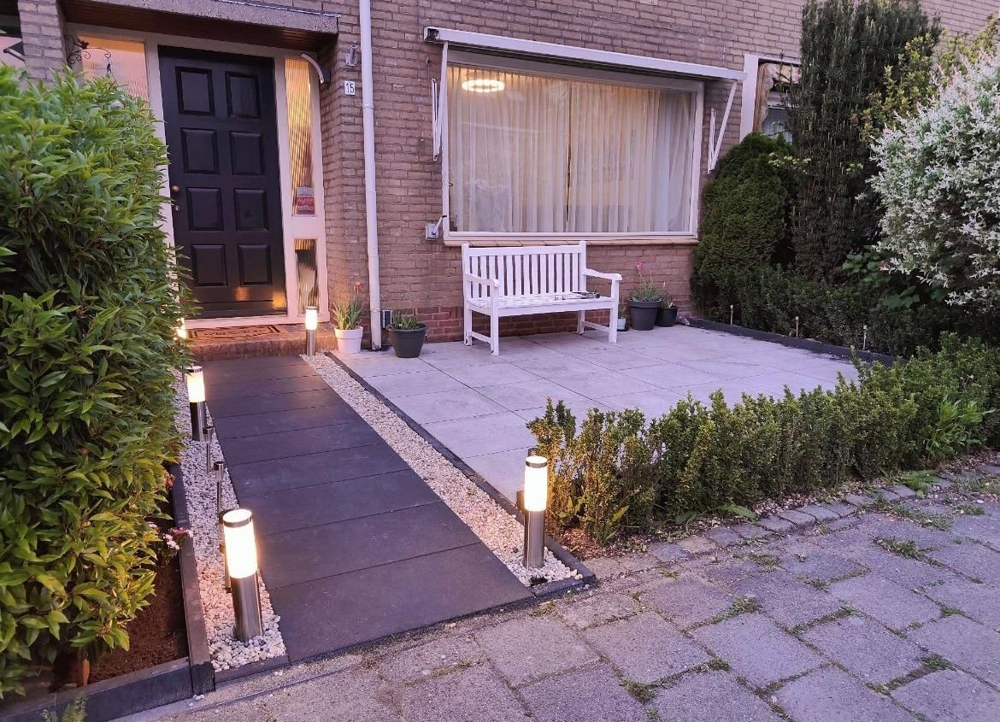

Impressiebeeld, geen opgeleverd project
Bestrating Dordrecht
Terrassen, tuinpaden en opritten strak aangelegd
Een strak bestraat terras of een verzorgd tuinpad maakt direct verschil in de uitstraling van uw tuin. Wij leggen bestrating waterpas en vakkundig aan, in het materiaal van uw keuze.
- Gratis bezichtiging in Dordrecht
- Offerte met wat wel en niet inbegrepen is
- Materiaal los of met montage
- Eigen werk, echte foto's
Wat houdt bestrating in?
Bestrating omvat het aanleggen van verharde oppervlakken in de tuin: terrassen, tuinpaden, opritten of parkeerplekken. Dit gebeurt op een voorbereide, waterdoorlatende ondergrond voor een stabiel en duurzaam resultaat.
Voor wie is dit bedoeld?
Voor huiseigenaren die een terras willen aanleggen of vervangen, een tuinpad willen aanleggen, of een oprit willen verharden. Ook geschikt voor VvE's en bedrijven met verharde buitenruimtes.
Welke problemen lost dit op?
- Een tuin zonder terras of bruikbaar buitenoppervlak.
- Verzakte of scheefliggende bestaande bestrating.
- Een modderig tuinpad of oprit bij nat weer.
Welke werkzaamheden kunnen we uitvoeren?
- Grondwerk en aanleg van een stabiele funderingslaag
- Leggen van tegels, klinkers of natuursteen
- Aanleg van tuinpaden en opritten
- Afwerking met voegvulling en juiste afwatering
Kies uw aanpak
Advies en aanleg
Wij adviseren over tegel, verband en hoeveelheid. Het materiaal kan in onze offerte worden opgenomen, of u levert het zelf aan. Wij verzorgen uitgraven, zandbed, bestraten, opsluiten en invegen.
Alleen leggen van eigen materiaal
Heeft u de tegels of klinkers al gekozen of gekocht? Na overleg leggen wij ze. Snijverlies en reservemateriaal stemmen we vooraf af; tekorten of afwijkende partijen zijn voor uw rekening.
Herstel of ophogen
Verzakte of losliggende delen herstellen, opnieuw leggen of ophogen, waar mogelijk met het bestaande materiaal.
Wat staat er in uw offerte — en wat niet standaard?
Altijd benoemd in de offerte
- Per onderdeel de hoeveelheid, het materiaal en de eenheid (m², m¹, stuks)
- Arbeid in uren, tegen het vaste uurtarief van € 60,00 excl. btw per medewerker
- Of afvoer, voorbereiding en grondwerk wel of niet zijn inbegrepen
- Welke posten nog een stelpost of 'op aanvraag' zijn, en waarom
- Wat u zelf voorbereidt, zodat er achteraf geen verrassingen zijn
Niet standaard inbegrepen
- Vergunningen en leges (waar nodig regelt u die, of spreken we dit vooraf apart af)
- Elektra-aansluitingen: die laat u door een erkend installateur maken
- Verwijderen van onvoorziene obstakels in de grond (puin, oude funderingen, wortels)
- Werk aan kabels en leidingen, en herstel van schade door verborgen gebreken
- Afvoer van grond of groenafval als dat niet uitdrukkelijk in de offerte staat
De offerte is leidend: daarin staat per onderdeel precies wat wel en niet is inbegrepen. Twijfelt u? Vraag het ons vóór u akkoord geeft.
Hoe verloopt een opdracht?
Bezichtiging & opmeten
We bekijken de locatie en bepalen de benodigde materialen en hoeveelheden.
Materiaalkeuze & offerte
U kiest het gewenste materiaal; wij stellen een heldere offerte op voor de uitvoering.
Aanleg & oplevering
We leggen de bestrating waterpas en strak aan, en ruimen netjes op.
Welke factoren bepalen de prijs?
De prijs van bestrating hangt onder meer af van:
- Het oppervlak dat bestraat wordt
- Het gekozen materiaal (beton, klinkers, natuursteen)
- De staat van de ondergrond en eventueel grondwerk
- Afvoer van oude bestrating of grond
Bestrating wordt geoffreerd op basis van vierkante meters en het gekozen materiaal. Het materiaal kan in de offerte worden opgenomen; wat het kost en hoe het wordt geleverd, bevestigen wij daarin.
Waarom Sealcleaning?
Sealcleaning is een jong en gedreven hoveniersbedrijf uit Dordrecht, ondersteund door vakmensen met jarenlange praktijkervaring. We werken met korte lijnen: u spreekt rechtstreeks met wie het werk uitvoert, en maken vooraf duidelijke afspraken over werkzaamheden en materialen.
Meer over onsUit de praktijk
Relevante projecten

Veelgestelde vragen
Vragen over bestrating
Welke materialen kan ik kiezen voor bestrating?
Van betontegels tot klinkers en natuursteen. We adviseren over geschikte opties; het gekozen materiaal kan in onze offerte worden opgenomen.
Blijft bestrating waterpas liggen?
Bij een goed voorbereide fundering blijft de bestrating stabiel liggen. We werken met een deugdelijke onderbouw.
Kunnen jullie ook een oprit bestraten?
Ja, we leggen ook opritten en parkeerplekken aan, geschikt voor voertuigen.
Inspiratie
Inspiratie voor terras en tuinpad
Laat je inspireren door verschillende stijlen en afwerkingen. Wij bespreken samen de mogelijkheden en stemmen de definitieve materialen vooraf met je af.

Stapplaten in grind 
Pad langs plantenbakken 
Terras met grote tegels


Impressiebeelden: voorbeelden van mogelijke uitvoeringen, geen opgeleverde projecten van Sealcleaning en geen gegarandeerde exacte producten. Meer inspiratie · Bespreek jouw idee